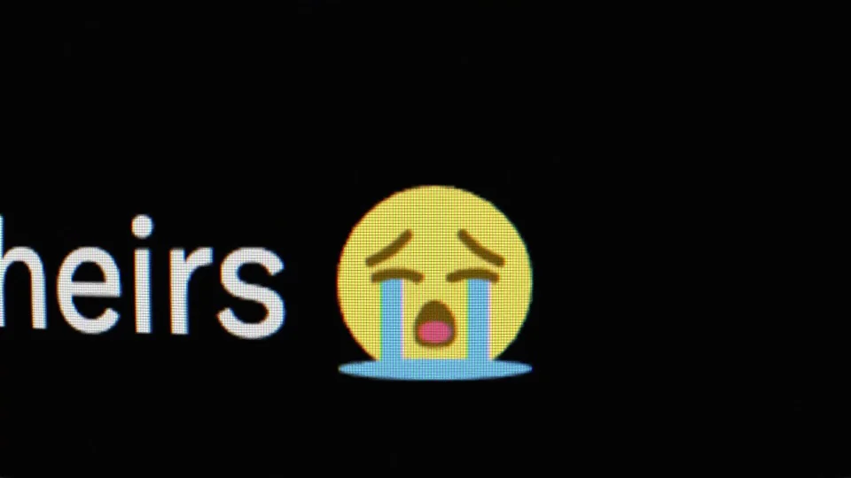
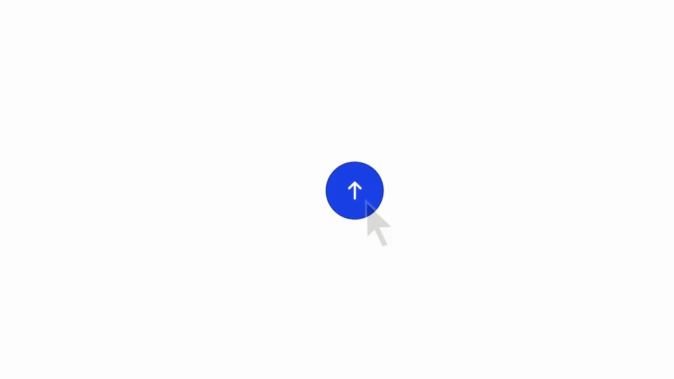
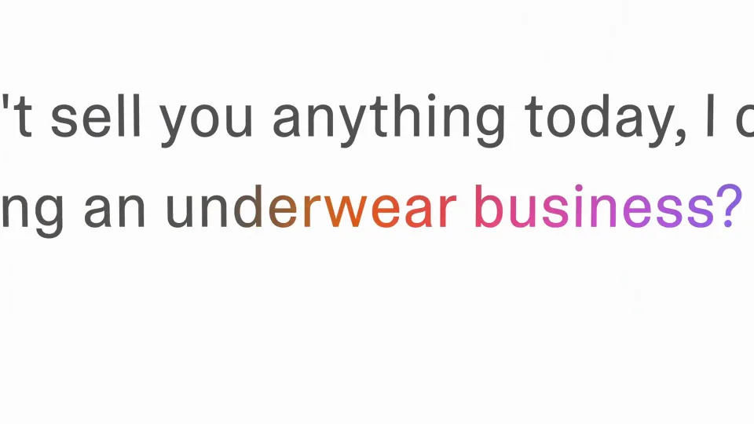

Lovable / V042
https://t.co/OVuIhnRm6v → https://t.co/kyKWp8myFL https://t.co/DHPzoRv6Oh
以一句质疑开场，用一次现场操作制造反转，再回到原来的社交对话。整段只讲清一个问题，不旁逸到产品功能合集。
构图与编排 可播放 · 可替换内容
整体编排规则示例
查看 HTML 源码
<!doctype html><html lang="zh-CN"><meta charset="utf-8"><meta name="viewport" content="width=device-width,initial-scale=1"><title>https://t.co/OVuIhnRm6v → https://t.co/kyKWp8myFL https://t.co/DHPzoRv6Oh · sequence</title><style>html,body{margin:0;width:100%;height:100%;overflow:hidden;background:#101013}canvas{display:block;width:100%;height:100%;object-fit:contain}</style><body data-mode="sequence"><canvas width="1000" height="600"></canvas><script src="data.js"></script><script src="common.js"></script><script src="scene.js"></script><script src="bridge.js"></script></body></html>画面元素社交贴文取景窗口地址栏产品输入回答回帖
MOTION LANGUAGE
动作与构图
局部动作 · 构图规则
01
质疑、证明、回应
先让观众读懂社交贴文中的疑问，再把视线移到域名和地址栏。打开网站、提出问题、得到答复之后，回到原贴文补上回应。
02
屏幕取景只跟着阅读对象移动
社交贴文、地址栏、网站和回复各有自己的取景范围。推近时保留可辨认的窗口或页面边缘，让观众知道仍在同一个使用过程里。
黑白界面提供阅读底色，彩色部分留给品牌或网站内容。疑问句和最终回应可用较大字重，地址和输入文字保持常规界面尺寸。
03
把反转留在最后一句
把反转留在最后一句规则示例
查看 HTML 源码
<!doctype html><html lang="zh-CN"><meta charset="utf-8"><meta name="viewport" content="width=device-width,initial-scale=1"><title>https://t.co/OVuIhnRm6v → https://t.co/kyKWp8myFL https://t.co/DHPzoRv6Oh · sequence</title><style>html,body{margin:0;width:100%;height:100%;overflow:hidden;background:#101013}canvas{display:block;width:100%;height:100%;object-fit:contain}</style><body data-mode="clip" data-start="23" data-end="35"><canvas width="1000" height="600"></canvas><script src="data.js"></script><script src="common.js"></script><script src="scene.js"></script><script src="bridge.js"></script></body></html>网站出现后先留短暂辨认时间，再输入问题。答案中真正回应质疑的那一句要完整露出，随后再切回社交场景；提前露出最终回应会削弱反转。
04
适合替换成哪类故事
选择一个可以现场澄清的误解，准备对应的操作与结果，并让最终回复直接回答开场。换品牌时检查网址、界面、问题和回帖是否说的是同一件事。
SEQUENCE
段落与节奏
点击段落，定位到上方编排示意。



画面参考 · 离散静帧
KEEP THE RELATIONSHIPS
制作其他主题
- 可换为功能误解与现场验证，保留质疑→操作证明→回帖闭环
- 引用内容必须与最后回应对应
制作约束
社交贴文 / 取景窗口 / 地址栏 / 产品输入 / 回答 / 回帖
- 开头用质疑制造信息差，切到网站亲自验证，末尾回到原贴回应
- 同一屏幕局部平移放大，注意阅读对象而非对全屏等速缩放
- 网站替换发生在地址输入之后，回应依赖刚展示的事实